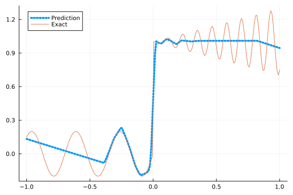
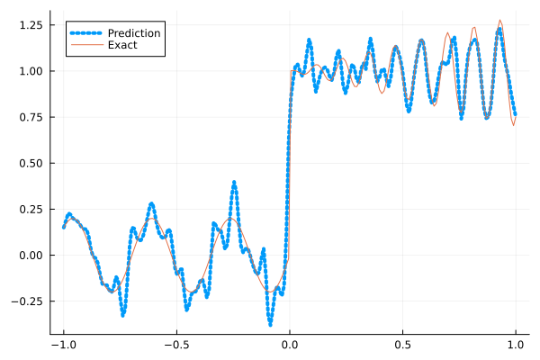
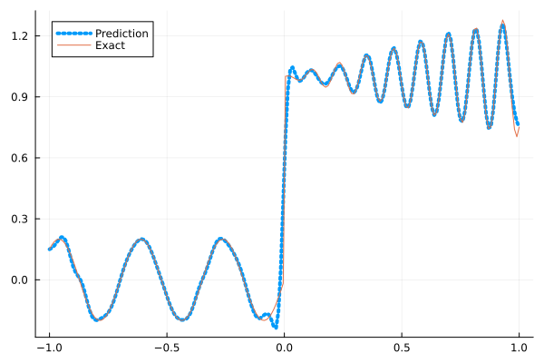
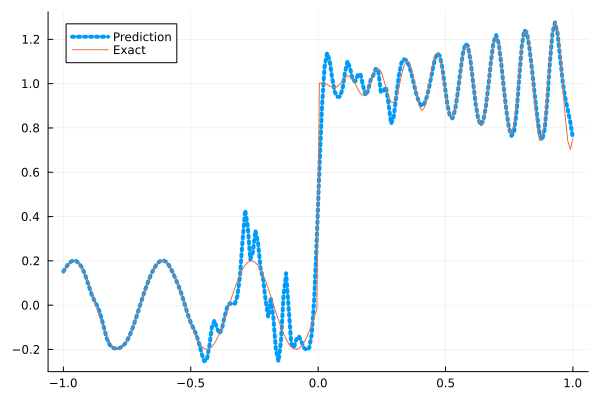
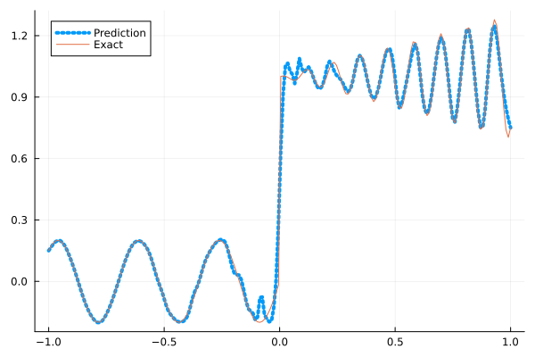

Fitting a nonlinear discontinuous function
This example is taken from here. However, we do not use adaptive activation functions. Instead, we show that using suitable non-parametric activation functions immediately performs better.
Consider the following discontinuous function with discontinuity at $x=0$:
\[u(x)= \begin{cases}0.2 \sin (18 x) & \text { if } x \leq 0 \\ 1+0.3 x \cos (54 x) & \text { otherwise }\end{cases}\]
The domain is $[-1,1]$. The number of training points used is 50.
Import pacakges
using Lux, Sophon
using NNlib, Optimisers, Plots, Random, StatsBase, ZygoteDataset
function u(x)
if x <= 0
return 0.2 * sin(18 * x)
else
return 1 + 0.3 * x * cos(54 * x)
end
end
function generate_data(n=50)
x = reshape(collect(range(-1.0f0, 1.0f0, n)), (1, n))
y = u.(x)
return (x, y)
endgenerate_data (generic function with 2 methods)Let's visualize the data.
x_train, y_train = generate_data(50)
x_test, y_test = generate_data(200)
Plots.plot(vec(x_test), vec(y_test),label=false)
Naive Neural Nets
First we demonstrate show naive fully connected neural nets could be really bad at fitting this function.
model = FullyConnected((1,50,50,50,50,1), relu)Chain(
layer_1 = Dense(1 => 50, relu), # 100 parameters
layer_2 = Dense(50 => 50, relu), # 2_550 parameters
layer_3 = Dense(50 => 50, relu), # 2_550 parameters
layer_4 = Dense(50 => 50, relu), # 2_550 parameters
layer_5 = Dense(50 => 1), # 51 parameters
) # Total: 7_801 parameters,
# plus 0 states, summarysize 80 bytes.Train the model
function train(model, x, y)
ps, st = Lux.setup(Random.default_rng(), model)
opt = Adam()
st_opt = Optimisers.setup(opt,ps)
function loss(model, ps, st, x, y)
y_pred, _ = model(x, ps, st)
mes = mean(abs2, y_pred .- y)
return mes
end
for i in 1:2000
gs = gradient(p->loss(model,p,st,x,y), ps)[1]
st_opt, ps = Optimisers.update(st_opt, ps, gs)
if i % 100 == 1 || i == 2000
println("Epoch $i || ", loss(model,ps,st,x,y))
end
end
return ps, st
endtrain (generic function with 1 method)Plot the result
@time ps, st = train(model, x_train, y_train)
y_pred = model(x_test,ps,st)[1]
Plots.plot(vec(x_test), vec(y_pred),label="Prediction",line = (:dot, 4))
Plots.plot!(vec(x_test), vec(y_test),label="Exact",legend=:topleft)Epoch 1 || 0.8616273262408086
Epoch 101 || 0.016534569014909323
Epoch 201 || 0.015073482764199977
Epoch 301 || 0.014028839983867804
Epoch 401 || 0.013321800240777934
Epoch 501 || 0.013177669921961432
Epoch 601 || 0.013158883618288719
Epoch 701 || 0.013154768430081674
Epoch 801 || 0.013279897983893998
Epoch 901 || 0.013107395104442653
Epoch 1001 || 0.013134065971928392
Epoch 1101 || 0.013126046505264792
Epoch 1201 || 0.013109753643048703
Epoch 1301 || 0.013056275851286755
Epoch 1401 || 0.013157761723140711
Epoch 1501 || 0.013118175909370087
Epoch 1601 || 0.013063868275652033
Epoch 1701 || 0.013030377370972446
Epoch 1801 || 0.01301174244310468
Epoch 1901 || 0.01302036143929592
Epoch 2000 || 0.013258407822545852
9.557894 seconds (13.16 M allocations: 1.483 GiB, 5.15% gc time, 91.57% compilation time)
Siren
We use four hidden layers with 50 neurons in each.
model = Siren(1,50,50,50,50,1; omega = 30f0)Chain(
layer_1 = Dense(1 => 50, sin), # 100 parameters
layer_2 = Dense(50 => 50, sin), # 2_550 parameters
layer_3 = Dense(50 => 50, sin), # 2_550 parameters
layer_4 = Dense(50 => 50, sin), # 2_550 parameters
layer_5 = Dense(50 => 1), # 51 parameters
) # Total: 7_801 parameters,
# plus 0 states, summarysize 88 bytes.@time ps, st = train(model, x_train, y_train)
y_pred = model(x_test,ps,st)[1]
Plots.plot(vec(x_test), vec(y_pred),label="Prediction",line = (:dot, 4))
Plots.plot!(vec(x_test), vec(y_test),label="Exact",legend=:topleft)Epoch 1 || 0.3802828697952917
Epoch 101 || 0.0003081840646947042
Epoch 201 || 3.5020194025776726e-7
Epoch 301 || 1.2332064855748937e-10
Epoch 401 || 4.457221024413555e-13
Epoch 501 || 3.6777712813722384e-14
Epoch 601 || 3.4359114844051104e-14
Epoch 701 || 2.552975883454677e-14
Epoch 801 || 2.8747467456589756e-14
Epoch 901 || 1.6645437833237832e-14
Epoch 1001 || 3.659349649530479e-14
Epoch 1101 || 3.2872893063380044e-14
Epoch 1201 || 4.142821679185701e-14
Epoch 1301 || 4.2966615909567954e-14
Epoch 1401 || 3.829434248443914e-14
Epoch 1501 || 4.766661473200035e-14
Epoch 1601 || 3.1131955087909155e-14
Epoch 1701 || 2.891388208096918e-14
Epoch 1801 || 7.013457958952444e-14
Epoch 1901 || 4.116658728522953e-14
Epoch 2000 || 1.0068111411435254e-13
4.995233 seconds (8.15 M allocations: 1.298 GiB, 5.84% gc time, 84.62% compilation time)
As we can see the model overfits the data, and the high frequencies cannot be optimized away. We need to tunning the hyperparameter omega
model = Siren(1,50,50,50,50,1; omega = 10f0)Chain(
layer_1 = Dense(1 => 50, sin), # 100 parameters
layer_2 = Dense(50 => 50, sin), # 2_550 parameters
layer_3 = Dense(50 => 50, sin), # 2_550 parameters
layer_4 = Dense(50 => 50, sin), # 2_550 parameters
layer_5 = Dense(50 => 1), # 51 parameters
) # Total: 7_801 parameters,
# plus 0 states, summarysize 88 bytes.@time ps, st = train(model, x_train, y_train)
y_pred = model(x_test,ps,st)[1]
Plots.plot(vec(x_test), vec(y_pred),label="Prediction",line = (:dot, 4))
Plots.plot!(vec(x_test), vec(y_test),label="Exact",legend=:topleft)Epoch 1 || 1.2683075799007666
Epoch 101 || 0.006143896154445421
Epoch 201 || 0.0047833667639260455
Epoch 301 || 0.003915282051175093
Epoch 401 || 0.0031041439188676965
Epoch 501 || 0.0024183475438239277
Epoch 601 || 0.0018496086434453168
Epoch 701 || 0.0013063360609763762
Epoch 801 || 0.0008043322466857698
Epoch 901 || 0.0004329119124369144
Epoch 1001 || 0.0002235288350408446
Epoch 1101 || 0.00012316645870686396
Epoch 1201 || 7.627390385697487e-5
Epoch 1301 || 5.394680155416548e-5
Epoch 1401 || 4.281911153296131e-5
Epoch 1501 || 3.6716617797906907e-5
Epoch 1601 || 3.2914343459670966e-5
Epoch 1701 || 3.0237464304932225e-5
Epoch 1801 || 2.8168870556012022e-5
Epoch 1901 || 2.645889997530481e-5
Epoch 2000 || 2.4994701281329246e-5
0.700897 seconds (1.15 M allocations: 892.461 MiB, 7.31% gc time)
Gaussian activation function
We can also try using a fully connected net with the gaussian activation function.
model = FullyConnected((1,50,50,50,50,1), gaussian)Chain(
layer_1 = Dense(1 => 50, gaussian), # 100 parameters
layer_2 = Dense(50 => 50, gaussian), # 2_550 parameters
layer_3 = Dense(50 => 50, gaussian), # 2_550 parameters
layer_4 = Dense(50 => 50, gaussian), # 2_550 parameters
layer_5 = Dense(50 => 1), # 51 parameters
) # Total: 7_801 parameters,
# plus 0 states, summarysize 80 bytes.@time ps, st = train(model, x_train, y_train)
y_pred = model(x_test,ps,st)[1]
Plots.plot(vec(x_test), vec(y_pred),label="Prediction",line = (:dot, 4))
Plots.plot!(vec(x_test), vec(y_test),label="Exact",legend=:topleft)Epoch 1 || 0.28499296066108976
Epoch 101 || 0.005093799259059891
Epoch 201 || 0.004560180818700665
Epoch 301 || 0.004022419901713683
Epoch 401 || 0.003066434321527266
Epoch 501 || 0.0031214526931924204
Epoch 601 || 0.00014680018689944944
Epoch 701 || 0.0003853197019551459
Epoch 801 || 1.0415603669148228e-6
Epoch 901 || 1.6146292626771712e-7
Epoch 1001 || 5.953864203334284e-6
Epoch 1101 || 3.80563137988676e-8
Epoch 1201 || 1.4498202876363338e-8
Epoch 1301 || 5.968019639076732e-6
Epoch 1401 || 1.7938773501935128e-8
Epoch 1501 || 5.703604082885951e-9
Epoch 1601 || 1.8620552120690296e-9
Epoch 1701 || 2.2815632641151517e-7
Epoch 1801 || 5.788313008515122e-7
Epoch 1901 || 1.0755140453775644e-5
Epoch 2000 || 1.159008094573943e-6
4.725388 seconds (7.28 M allocations: 1.251 GiB, 5.19% gc time, 81.56% compilation time)
Quadratic activation function
quadratic is much cheaper to compute compared to the Gaussain activation function.
model = FullyConnected((1,50,50,50,50,1), quadratic)Chain(
layer_1 = Dense(1 => 50, quadratic), # 100 parameters
layer_2 = Dense(50 => 50, quadratic), # 2_550 parameters
layer_3 = Dense(50 => 50, quadratic), # 2_550 parameters
layer_4 = Dense(50 => 50, quadratic), # 2_550 parameters
layer_5 = Dense(50 => 1), # 51 parameters
) # Total: 7_801 parameters,
# plus 0 states, summarysize 80 bytes.@time ps, st = train(model, x_train, y_train)
y_pred = model(x_test,ps,st)[1]
Plots.plot(vec(x_test), vec(y_pred),label="Prediction",line = (:dot, 4))
Plots.plot!(vec(x_test), vec(y_test),label="Exact",legend=:topleft)Epoch 1 || 0.2802579114625756
Epoch 101 || 0.005929743565568079
Epoch 201 || 0.005113042974640499
Epoch 301 || 0.0037438437962773363
Epoch 401 || 0.002570973838895654
Epoch 501 || 0.0014910993427662545
Epoch 601 || 0.000617827824617571
Epoch 701 || 0.00013908002608233394
Epoch 801 || 2.37113068771157e-5
Epoch 901 || 1.9554565438272714e-5
Epoch 1001 || 3.343236674251785e-7
Epoch 1101 || 2.59831621443614e-7
Epoch 1201 || 6.033455637398082e-7
Epoch 1301 || 5.703735307665465e-9
Epoch 1401 || 4.640305259993999e-6
Epoch 1501 || 4.89575136649069e-9
Epoch 1601 || 1.7039042974832642e-10
Epoch 1701 || 2.6643492918642046e-5
Epoch 1801 || 1.4442234600951528e-9
Epoch 1901 || 2.9854283997369532e-5
Epoch 2000 || 2.5119715627421276e-7
4.214972 seconds (7.03 M allocations: 1.235 GiB, 5.65% gc time, 87.60% compilation time)
Conclusion
"Neural networks suppresse high frequency components" is a misinterpretation of the spectral bias. The accurate way of putting it is that the lower frequencies in the error are optimized first in the optimization process. This can be seen in Siren's example of overfitting data, where you do not have implicit regularization. The high frequency in the network will never go away because it has fitted the data perfectly.
Mainstream attributes the phenomenon that neural networks "suppress" high frequencies to gradient descent. This is not the whole picture. Initialization also plays an important role. Siren mitigats this problem by initializing larger weights in the first layer, while activation functions such as gassian have large enough gradients and sufficiently large support of the second derivative with proper hyperparameters. Please refer to Vincent Sitzmann, Julien Martel, Alexander Bergman, David Lindell, Gordon Wetzstein (2020), Sameera Ramasinghe, Simon Lucey (2021) and Sameera Ramasinghe, Lachlan MacDonald, Simon Lucey (2022) if you want to dive deeper into this.